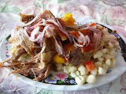

Receta: Hornado

Descripción
El Hornado es una sopa de pescado originaria de la costa ecuatoriana
considerada el plato insignia del país.
Se elabora con pescado (generalmente albacora o atún)
yuca, tomate, y una gran cantidad de cebolla colorada
y se sirve con un caldo a base de estos ingredientes
y especias.
Se considera un plato emblemático por su historia, sabor y
versatilidad, y es popular como remedio para la resaca.
- yuca
- tomate
- cebolla colorada
- albacora
- cilantro
- chifle
Pasos
- Cocinar la yuca
- Cocinar el tomate
- Cocinar la albacora
- cortar la cebolla
- hacer el chifle
- Servir todo
HOME